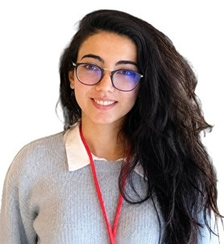

Profil
Zərifə Osmanlı 2024-cü ilin yanvarından Padua Universitetinin BioComputing UP qrupunda postdoktorantdır və xərçəngdə zülal quruluşu ilə funksiya əlaqələri üzərində işləyir. 2019-cu ilin noyabrından 2023-cü ilin dekabrınadək Montpellier Universiteti və CRBM-CNRS-də struktur bioinformatikası üzrə PhD dərəcəsi alıb. İş alternativ proteomların struktur annotasiyası üçün bioinformatika alətlərinə aiddir. 2014–2017-ci illərdə Ege Universitetində molekulyar biologiya üzrə magistr, 2009–2013-cü illərdə Bakı Dövlət Universitetində biofizika üzrə bakalavr dərəcəsi alıb. 2019-cu ildən Bakıdakı Biofizika İnstitutunda kiçik elmi köməkçi olduğu da yazılıb.
İş təcrübəsi
Padua Universiteti, Padua, İtaliya
yanvar 2024–hazırdaPostdoktorant
- BioComputing UP
CRBM-CNRS, Montpellier, France
September–November 2023Elmi mühəndis köməkçisi
Biofizika İnstitutu, Bakı, Azərbaycan
2019–hazırdaKiçik elmi köməkçi
- İnteqrativ biologiya laboratoriyası
Təhsil
PhD
November 2019–December 2023Struktur bioinformatikası. Alternativ splaysinq və çərçivə sürüşməsindən yaranan alternativ proteomların irimiqyaslı struktur annotasiyası üçün alətlər
Montpellier Universiteti, CRBM-CNRS, Montpellier, Fransa
MSc
2014–2017Molekulyar biologiya. Orta bal 3.6/4.0. Üçillik Türkiyə təqaüdü
Ege Universiteti, Biologiya fakültəsi, İzmir, Türkiyə
BSc
2009–2013Biofizika. Qiymət 82/100. Azərbaycan Təhsil Nazirliyinin dördillik təqaüdü
Bakı Dövlət Universiteti, Bakı, Azərbaycan
Qrantlar və layihələr
- Twinning. Qrant müqaviləsi 952334. Nəzarət şurasının üzvü, Aİ nümayəndəsi — EU Horizon 2020 — Nəzarət şurasının üzvü
- February–March 2023 — REFRACT. Grant agreement 823886. Improvement of tandem-repeat sets of protein isoforms with MetaRepeatFinder — EU Marie Skłodowska-Curie RISE — Biraylıq ezamiyyət, Kilmes Milli Universiteti, Argentina
Tədris
- 8 May 2024 — Struktur bioinformatikası — Magistratura. Dəvətli mühazirəçi — Riyaziyyat kafedrası, Padua Universiteti
Elmi rəhbərlik
- Magistrantlar — Həmçinin REFRACT layihələri üçün BioComputing UP-a gələn ezam olunanların rəhbərliyi
Nəşrlər
Rəylənmiş (peer-reviewed) jurnal məqalələri
1. Falgarone, T.; Villain, E.; Richard, F.; Osmanli, Z.; Kajava, A. V. Census of exposed aggregation-prone regions in proteomes. Briefings in Bioinformatics, 2023, bbad183. https://doi.org/10.1093/bib/bbad183.
2. Osmanli, Z.; Falgarone, T.; Samadova, T., et al. The difference in structural states between canonical proteins and their isoforms established by proteome-wide bioinformatics analysis. Biomolecules, 2022, 12(11), 1610. https://doi.org/10.3390/biom12111610.
Dəvətli məruzələr və konfranslarda iştirak
- 29 June–3 July 2024 — 48-ci FEBS konqresi, Milan, İtaliya — Poster — Transformation of sequence-structure properties of protein tandem repeats induced by shifted reading frames
- 26–28 February 2024 — Təlim məktəbi 5, Brüssel, Belçika — Təlim
- 26–28 September 2023 — 2-ci ML4NGP-REFRACT seminarı, Montpellier, Fransa — Seminar
- 19–21 April 2023 — 1-ci ML4NGP təlim məktəbi, Portu, Portuqaliya — Təlim
- 16 February 2023 — La Plata Milli Universiteti, La Plata, Argentina — Seminar — Large-scale bioinformatics analysis of the dark proteome
- February–March 2022 — Hakaton — Qrup tapşırığı — Finding tandem-repeat proteins with strange or novel folds by AlphaFold
- 17 May 2022 — Fizika İnstitutu, Bakı, Azərbaycan — Seminar — Proteome-wide bioinformatics analysis of protein amyloidogenicity
- 14–18 November 2021 — Protein Signalling konfransı, Kopenhagen, Danimarka — Poster — Proteome-wide bioinformatics analysis reveals that isoforms are more prone to aggregate than canonical proteins
- 26–29 July 2021 — 4-cü Beynəlxalq Splaysinq Konfransı, Lissabon, Portuqaliya — Qısa məruzə — Structural and functional annotation of alternative proteomes derived from splicing
- 15 March 2021 — CRBM-CNRS, Montpellier, France — Seminar — Structural-functional annotation of alternative proteomes
- 5 February 2021 — Biofizika İnstitutu, AMEA, Bakı, Azərbaycan — Seminar — Alternative proteomes derived from the frameshift mechanism
- 3–6 March 2020 — Gənc alim və mütəxəssislərin ikinci beynəlxalq elmi konfransı, AMEA, Bakı, Azərbaycan — Tezis — Neighbours of human cancer genes
- 24–25 May 2019 — 2-ci Beynəlxalq Konfrans One Health: Problems and Solutions, Bakı, Azərbaycan — Şifahi — In silico analysis of the prion gene in local Turkish buffaloes
- 5–6 May 2017 — Beynəlxalq tələbə elmi konfransı, İzmir, Türkiyə — Şifahi — Bioinformatics approaches for PRNP gene analysis in Bubalus bubalis